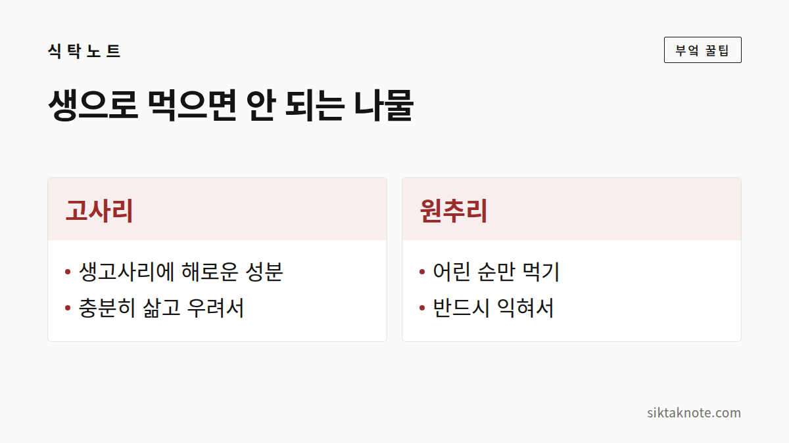

나물이 너무 써요 — 나물별 쓴맛·아린맛 빼는 법

3줄 요약
- 쓴맛은 대부분 물에 녹아 나와서, "데치고 찬물에 담가 우리기"가 기본이에요.
- 데칠 땐 소금 한 꼬집, 뚜껑은 열고, 건진 뒤엔 바로 찬물에 담가 주세요.
- 고사리와 원추리는 맛이 아니라 안전의 문제라서, 반드시 익혀서 먹어야 해요.
어떤 나물이든 먼저 이렇게
나물을 무쳐 놓고 한 입 먹었는데 입안이 씁쓸하게 남을 때가 있죠. 그럴 땐 물이 해결사예요. 쓴맛 성분 대부분이 물에 녹아 나오니까, 데치고 식히고 우려 내는 순서만 지켜 주면 돼요.
- 넉넉한 물에 소금을 한 꼬집 넣으면 색이 선명해지고 풋내가 덜해요.
- 뚜껑은 열고 데쳐요. 휘발성 냄새 성분이 날아가거든요.
- 건지자마자 찬물에 넣어요. 더 익는 걸 막아 주고, 쓴맛 성분도 물로 빠져나와요.
- 쓴맛이 강하면 찬물에 30분~몇 시간 담가 두고, 중간에 물을 갈아 줘요.
- 마지막엔 물기를 꼭 짜요. 우려낸 물에 쓴맛이 배어 있으니까요.

나물마다 손질이 조금씩 달라요
| 나물 | 쓴맛·아린맛 빼는 법 | 우리는 시간 |
|---|---|---|
| 고사리(말린 것) | 물에 불린 뒤 20~30분 삶고, 찬물에 담가 물을 여러 번 갈아 줌 | 반나절~하룻밤 |
| 도라지 | 굵은소금을 뿌려 바락바락 주무른 뒤 헹구고, 찬물에 담금 | 30분~1시간 |
| 씀바귀·고들빼기 | 데친 뒤 찬물에 담가 맛을 보며 물을 갈아 줌 | 2시간~하루 |
| 머위 | 데친 뒤 껍질을 벗기고 찬물에 담금 | 1~2시간 |
| 곤드레·취나물(말린 것) | 불려서 삶은 뒤 그대로 식히고 찬물에 헹굼 | 불리기 반나절 |
| 원추리 | 반드시 데친 뒤 찬물에 충분히 우림 | 2시간 이상 |

나물이 쓴 데에는 이유가 있어요
나물의 쓴맛과 아린맛은 식물이 벌레나 동물에게서 스스로를 지키려고 만든 성분이에요. 다행히 대부분 물에 잘 녹아서, 데치고 우리는 과정이 가장 확실한 해법이 되는 거예요.
다만 쓴맛을 싹 없애 버리면 그 나물만의 향도 함께 빠져나가요. 씀바귀나 머위는 쌉싸름한 맛 자체를 즐기는 나물이니까, 중간중간 맛을 보면서 마음에 드는 정도에서 멈추면 돼요.
이것만큼은 꼭 지켜 주세요
고사리는 생으로 먹지 않아요. 생고사리에는 몸에 해로운 성분이 있어서, 충분히 삶고 우려낸 뒤에 먹어야 해요. 원추리도 어린 순만, 반드시 익혀서 먹어야 하고요. 자랄수록 독성 성분이 늘어나고, 날것으로 먹으면 복통과 구토가 날 수 있거든요.
산에서 직접 캔 나물은 확실히 아는 것만 드세요. 독초와 닮은 나물이 많아요.

그래도 쓰다면 양념 힘을 빌려요
된장이나 고추장으로 무치면 쓴맛이 덜 도드라지고, 들기름에 볶으면 고소한 맛이 쓴맛을 살며시 감싸 줘요. 매실청이나 조청을 아주 조금 넣으면 맛이 한결 둥글어지고요.
나물 손질은 결국 물이랑 친해지는 일이에요. 데치고, 찬물에 담그고, 맛을 보며 물을 갈아 주다 보면 어떤 나물이든 한결 부드럽게 먹을 수 있어요.